Funksjoner
Alt Trax kan gjøre, sortert etter når du bruker det.
Når du legger sporet
Sporleggeren registrerer ruten og gjenstandene.
- LiggetidNedtelling på låseskjermen, og varsel fem minutter før sporet er klart.
- Meter mellom gjenstanderSe hvor langt det er siden forrige gjenstand mens du legger sporet.
- Kryss-sporLegg et ferskere spor på tvers, med varsel før krysset.
- IGP-nivå og malVelg nivå fra IGP-V til FH 3, se skritt mot kravet og legg sporet etter en mal på kartet.
- BlodsporSårleie, blodstopp, vilt og fluktretning, med egne knapper under legging.
- Sporplaner iPhoneTegn sporet på kartet hjemme og legg det etter planen ute.
- Hold inne StoppSporet avsluttes ikke ved et uhell.
Når hunden sporer
Hundeføreren følger hunden med telefonen i lomma.
- TalevarslerHør det når du nærmer deg en gjenstand.
- SportapTelefonen vibrerer når dere kommer bort fra sporet.
- Funn automatiskGjenstanden registreres som funnet når du kommer fram til den.
- Blindt sporSporet og varslene skjules til du stopper.
- MarkeringLigg, sitt, stå, apport eller forbi, med ett trykk etter «Funnet».
- NattmodusRødt lys på skjermen, med sporet og posisjonen godt synlig.
- Feltsøk og arealsøkLag et felt på kartet og søk etter gjenstander eller figuranter, med tidsgrense og egen statistikk.
Etterpå
Se hva som skjedde, og hvordan hunden utvikler seg.
- SpordetaljenStort kart med avspilling, og faner for oversikt, avvik, gjenstander og forhold.
- HundesidenNøkkeltall, mål, treningsmomenter og utviklingen for hver hund.
- Vurdering av sporetGi karakter, vanskelighetsgrad og et læringspunkt etter hvert spor.
- TreningsmomenterLag egne momenter som «Spiss vinkel», og vurder dem etter sporet.
- Vind og værVindpil på kartet og været idet hunden starter sporet.
- Rediger sporKutt starten og slutten av et spor i etterkant, og rett funn etterpå.
Deling og dataene dine
Ingen konto. Sporene ligger på telefonen din.
- Send sporet til hundeførerenSend sporet med AirDrop eller e-post, så åpnes det rett i Trax hos mottakeren.
- Send spor blindtMottakeren ser bare startstedet til sporet er gått.
- Del med bilde av hundenTrax legger sporet, gjenstandene og tallene oppå et bilde fra kamerarullen.
- Flere spor i én PDFEksporter mange spor samlet, for eksempel til egen dokumentasjon.
- SikkerhetskopiAutomatisk kopi av alle spor og hunder til iCloud Drive.
- Velg språkNorsk, svensk, engelsk eller tysk, uavhengig av språket på telefonen.
Del sporet med et bilde av hunden
Velg et bilde fra kamerarullen, så legger Trax sporet, gjenstandene og tallene oppå. Du kan dele det som story eller innlegg, og velge fargene på sporet selv. Vil du heller vise bare sporet, får du det på en grønn bakgrunn.

Send sporet til hundeføreren
Sporlegger og hundefører trenger ikke bruke samme telefon. Trykk «Til en annen Trax-bruker» og send sporet med AirDrop eller e-post, så åpnes det rett i Trax hos mottakeren, klart til start. Ingen konto og ingen innlogging.
Bruk AirDrop eller e-post, ikke Meldinger. Går meldingen som SMS, kommer ikke filen fram.
Skjermbilder
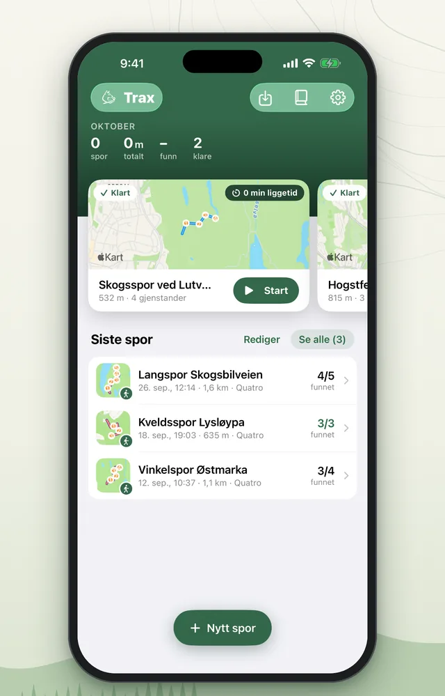
Alt på ett stedMånedens tall, spor som er klare til start og de siste sporene dine. 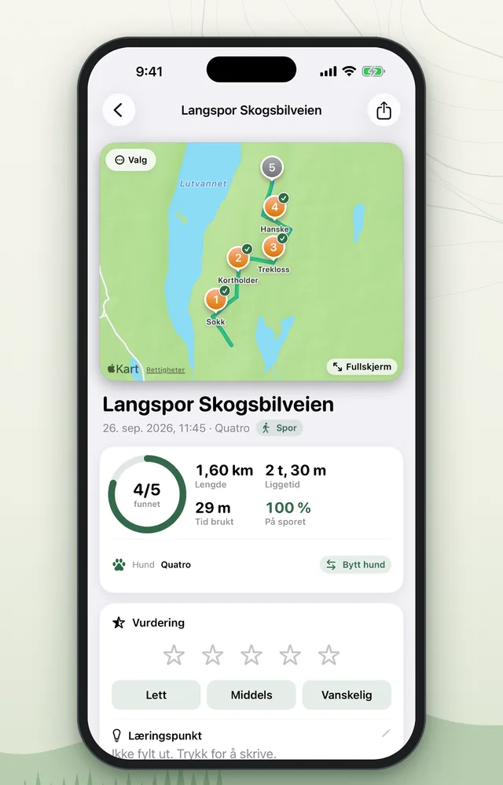
Hele sporet på ett kortKart, funn, lengde, liggetid og hvor mye av sporet hunden fulgte. 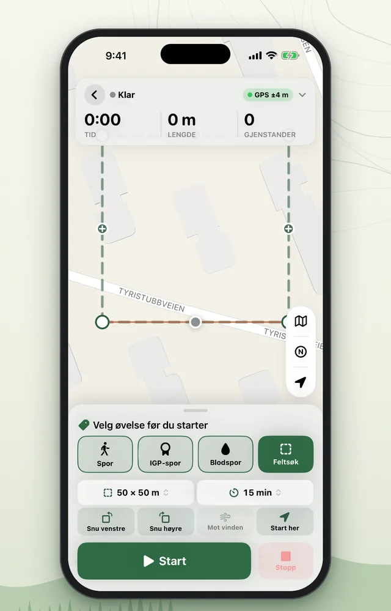
Velg øvelseSpor, IGP-spor, blodspor eller feltsøk. Tegn feltet på kartet og sett en tidsgrense. 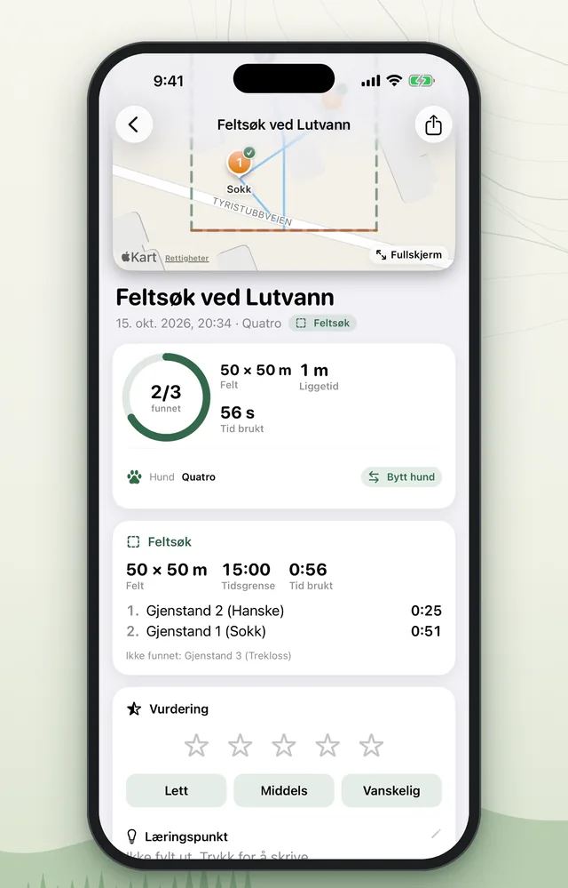
Feltsøk og arealsøkSe hvilke gjenstander hunden fant, og hvor lang tid hvert funn tok. 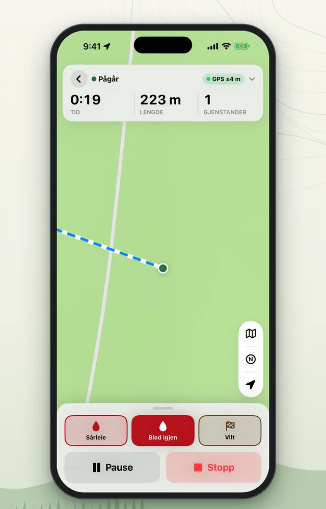
BlodsporMarker sårleie, blod igjen og vilt med ett trykk mens dere jobber dere gjennom sporet. 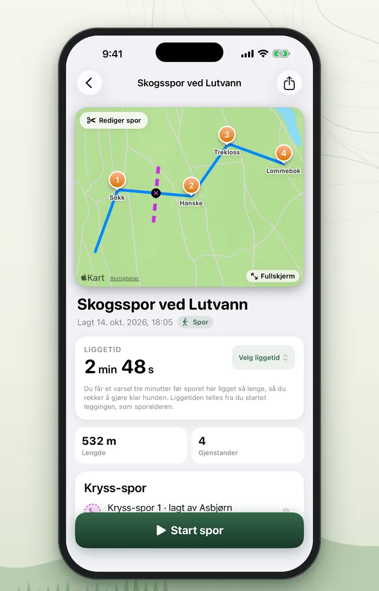
Kryss-sporLegg et ferskere spor på tvers, og se liggetiden telle ned før dere starter. 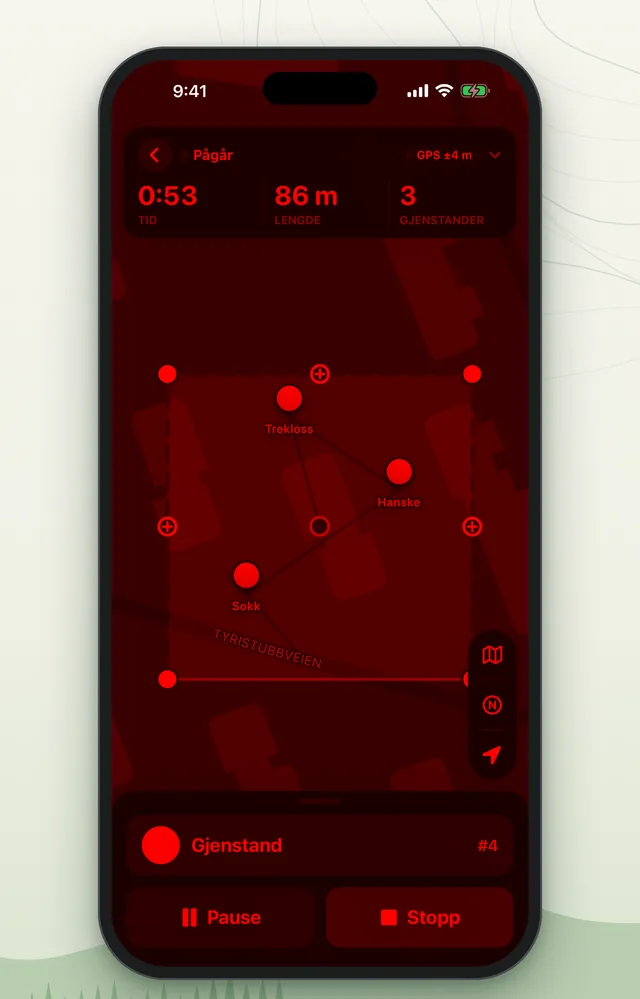
NattmodusRødt lys på skjermen når du trener i mørket.
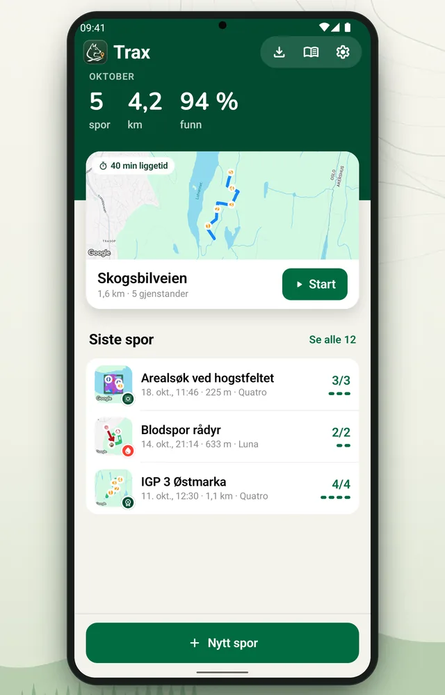
Alt på ett stedMånedens tall, spor som er klare til start og de siste sporene dine. 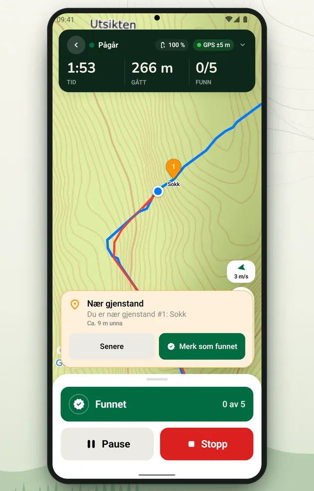
Merk funn underveisTrax sier fra når du nærmer deg en gjenstand. Ett trykk, så er funnet registrert. 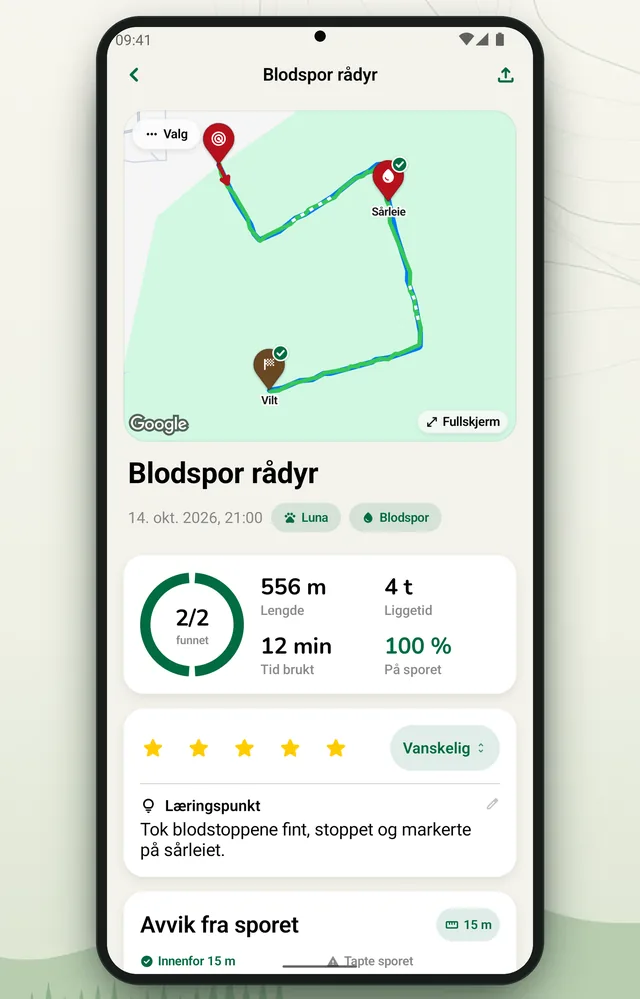
Hele sporet på ett kortKart, funn, lengde, liggetid og hvor mye av sporet hunden fulgte. 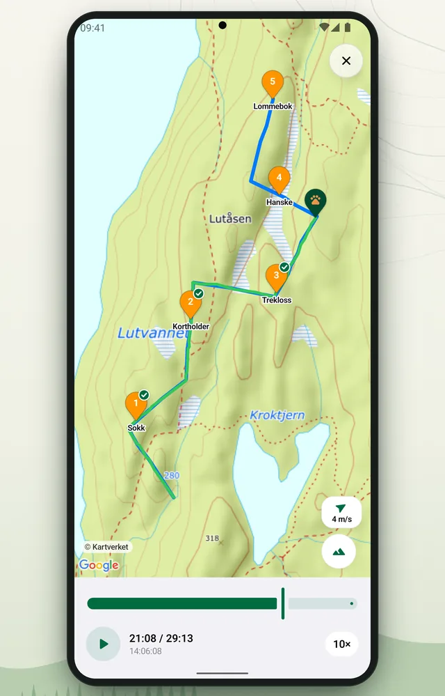
Spill av sporetSe det lagte sporet og hundens vei side om side, i opptil 10x fart. 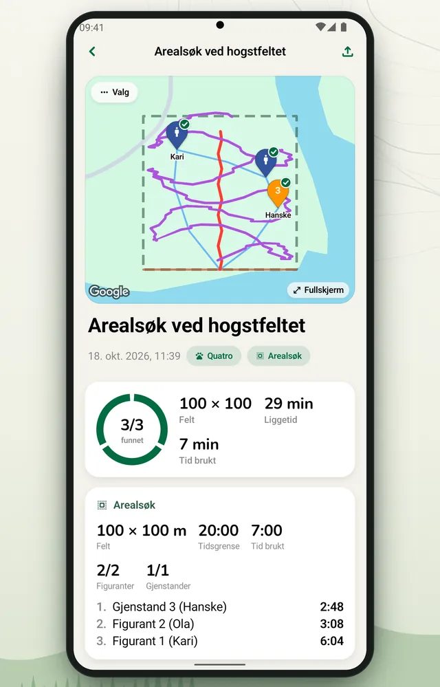
Feltsøk og arealsøkSe hvilke gjenstander og figuranter hunden fant, og tiden til hvert funn. 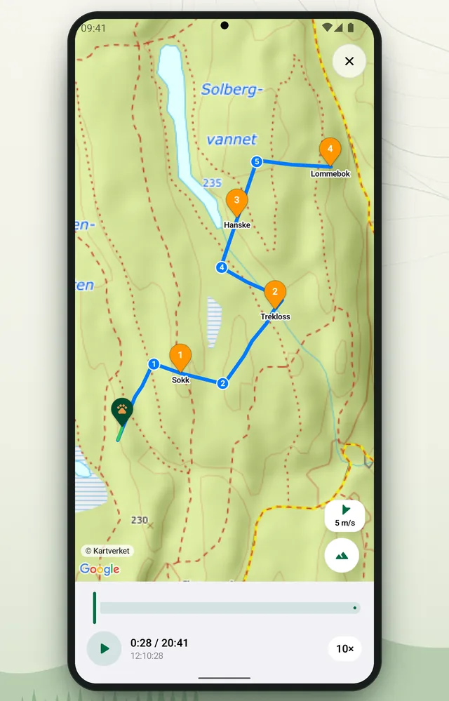
IGP-spor med vinklerNummererte vinkler og gjenstander, og hundens spor oppå det lagte sporet. 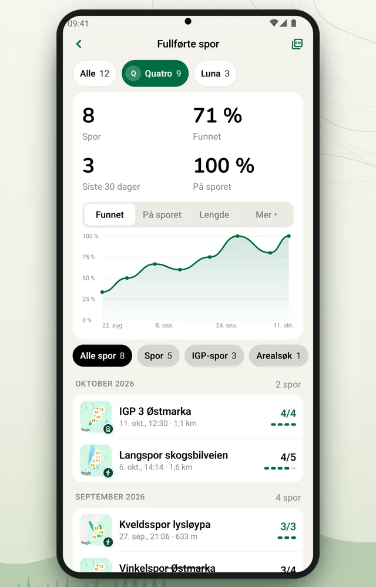
Følg utviklingenFunn, hvor godt hunden holdt sporet og lengde over tid, for hver hund. 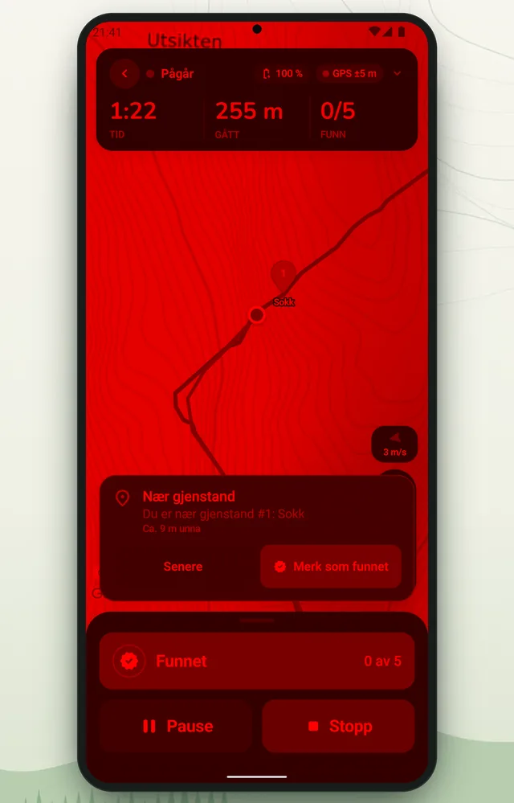
NattmodusRødt lys på skjermen når du trener i mørket.